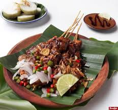
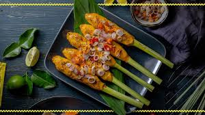
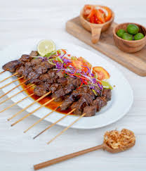
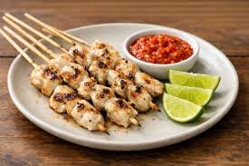

Satay Menu

Sate Madura
The most widespread version. Skewered chicken or goat meat grilled over open charcoal, served with a rich, savory-sweet peanut sauce, kecap manis (sweet soy sauce), and sliced shallots.
Sate Padang
Features beef or ox tongue boiled in a mixture of turmeric, lemongrass, and ginger.

Sate Lilit
Uniquely made from minced meat traditionally pork, fish, or chicken blended with grated coconut, kaffir lime leaves, and rich Balinese spices.

Sate Maranggi
Hailing from Purwakarta. The beef or lamb is heavily marinated in a spice paste of coriander, ginger, and palm sugar before grilling, making it so flavorful it requires no additional peanut or soy sauce. Buy

Sate Klathak
A minimalist yet striking skewered goat meat dish that uses only salt, pepper, and garlic.

Sate Taichan
A modern street-food staple that skips the heavy peanut and soy sauces.